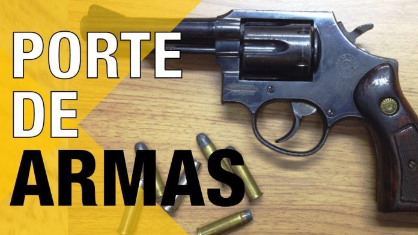

PORTE DE ARMA é o documento que autoriza o cidadão a portar, transportar e trazer consigo uma arma de fogo, de forma discreta, fora de suas dependências ou de seu local de trabalho.
Para que uma pessoa física possa obter e portar armas de fogo é necessário dirigir-se a uma unidade da polícia federal com um requerimento preenchido, além de estar de acordo com as seguintes condições;
a) Ter 25 anos ou mais.
b) Ter uma “justificativa” para o pedido, expondo fatos ou, principalmente, exercer atividade profissional de risco ou de ameaça à sua integridade física.
c) Comprovação de idoneidade, ou seja, mostrar que você está apto para obter o porte de arma de fogo, com a apresentação de antecedentes criminais fornecidos pela justiça federal, estadual, militar e eleitoral. Além, é claro, de não estar respondendo a processo criminal.
d) Ter curso de tiro atualizado.
e) Ter trabalho e residência fixa.
f) Além de uma pilha enorme de documentação obrigatória.
Diante dos fatos, concluísse que o processo para o porte é muito burocrático e, como consequência, também muito demorado. O sistema utilizado atualmente, a política atual, visa impedir a grande maioria das pessoas de ter acesso às armas de fogo, pois, segundo eles, o porte de arma estaria diretamente ligado aos fatores de violência e homicídios no país.
Porém, toda via, ainda não é o fim para você que quer ter uma arma, seja para a proteção lazer, enfim, basta estar dentro dos critérios do governo. O que não é impossível, só quase. Mas se você realmente tem vontade e necessidade de ter uma arma de fogo é só cruzar os dedos e dar a entrada no processo se, e somente se, você realmente cumprir todos os requisitos necessários. Fora isso, esqueça ou entre na ilegalidade.

Os mais bem armados
Todos os países do mundo possuem armas de fogo, só o que muda é a quantidade. Para que possamos ter uma noção, quase próxima a real, dessa quantidade elaboramos um gráfico com base nas informações de um estudo publicado pela Small Arms Survey.
No gráfico podemos ver que a grande maioria dos países mais desenvolvidos e com as melhores taxas de segurança e mortalidade fazem parte do grupo dos mais bem armados, exceto a Inglaterra que caminha em sentido contrário.